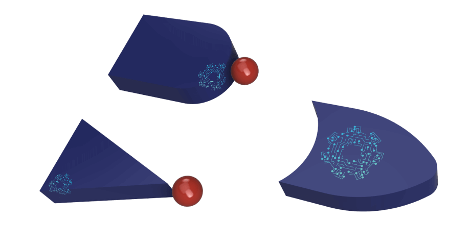

Tambien se le conoce como Algebra Boole, en electronica, informatica y matematicas es una estructura algebraica que esquematiza las operaciones logicas
Es una rama especial de la algebra que se usa principalmente en la electronica digital
Fue inventada en el año 1854 por el matematico ingles George Boole.
El algebra de Boole es un metodo para simplificar los circuitos logicos. Tambien se llama Cambio de algebra. Se puede representar el funcionamiento de los circuitos logicos utilizando numeros, siguiendo algunas reglas, que son bien conocidas como "Leyes del álgebra de Boole".
Primero se declaro la idea del algebra de Boole en su libro "Una investigacion de las leyes del pensamiento". Despues de esto, el algebra de Boole es bien conocida como la forma perfecta para representar los circuitos logicos digitales. A fines del siglo XIX, los cientificos Jevons, Schroder y Huntington utilizaron este concepto para términos modernizados. Y en el año de 1936, MHStone demostro que el algebra de Boole es 'isomorfo' para los conjuntos (un area funcional en matematicas).
En la decada de 1930, un cientifico llamado Claude Shannon desarrollo un nuevo metodo de algebra tipo "Cambio de algebra" utilizando los conceptos de algebra de Boole, para estudiar los circuitos de conmutacion. La sintesis logica de las herramientas modernas de automatizacion electronica se representa de manera eficiente mediante el uso de funciones booleanas conocidas como "Diagramas de decision binarios".
Dar click para mas informacion